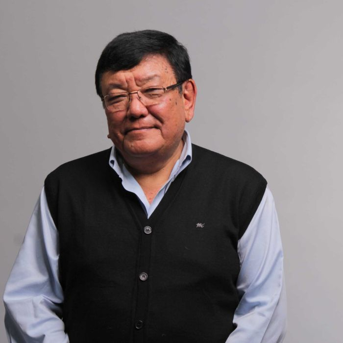

Sanduk Ruit, born on September 4, 1954 is an ophthalmologist from Nepal who was involved to restore the sight of over 180,000 people across Africa and Asia using small-incision cataract surgery. Ruit is the founder and the executive director of the Tilganga Institute of Ophthalmology, which manufactures intraocular lenses for surgical implantation at a fraction of the previous manufacturing cost. The low cost has made cataract surgeries slightly cheaper in Nepal.Ruit has been referred to as the "God of Sight". He was awarded the Ramon Magsaysay Award for Peace and International Understanding, considered to be the Asian equivalent of the Nobel Prize, for "placing Nepal at the forefront of developing safe, effective, and economical procedures for cataract surgery, enabling the needlessly blind in even the poorest countries to see again.